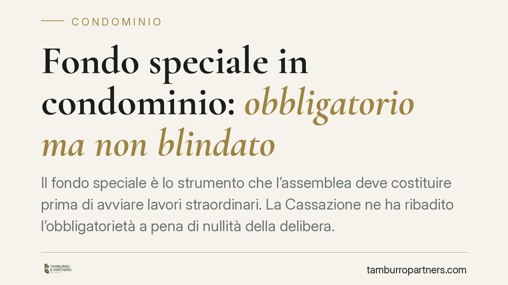

Fondo speciale in condominio: obbligatorio ma non blindato
Il fondo speciale è lo strumento che l'assemblea deve costituire prima di avviare lavori straordinari. La Cassazione ne ha ribadito l'obbligatorietà a pena di nullità della delibera. Ma attenzione: non è un patrimonio separato e protetto. Le somme versate restano pignorabili dai creditori del condominio. Un vincolo di destinazione che non equivale a una garanzia.

Il fatto
Quando un condominio deve affrontare opere straordinarie - rifacimento del tetto, consolidamento delle facciate, sostituzione dell'ascensore - la legge impone una cautela precisa: costituire un fondo speciale di importo pari a quello dei lavori deliberati.
La regola non è nuova, ma la Corte di Cassazione (sent. n. 9388/2023) ne ha chiarito la portata, ribadendo che la mancata costituzione del fondo rende nulla la delibera che approva i lavori. Non annullabile, quindi impugnabile entro trenta giorni: nulla, con un vizio rilevabile in ogni tempo.
Il punto delicato arriva dopo. Il fondo, pur vincolato alla sua destinazione, non costituisce un patrimonio separato e rimane aggredibile dai creditori del condominio. Un dato che spesso sfugge a condomini e amministratori.
Inquadramento normativo
L'obbligo nasce dall'art. 1135, comma 1, n. 4 del codice civile, come riformato dalla L. 220/2012. La norma prevede che l'assemblea, quando delibera opere di manutenzione straordinaria o innovazioni, costituisca "obbligatoriamente un fondo speciale di importo pari all'ammontare dei lavori".
Una sola eccezione: se l'esecuzione dei lavori è prevista in più fasi (in base a un contratto che lo stabilisce), il fondo può essere costituito in relazione ai singoli pagamenti dovuti.
La funzione è trasparente. Il legislatore vuole garantire all'impresa appaltatrice la disponibilità effettiva delle somme, evitando che il cantiere si fermi per morosità di alcuni condomini. Il fondo nasce quindi come presidio della regolare esecuzione dell'opera.
Resta però fermo l'art. 63 disp. att. c.c., che disciplina la riscossione dei contributi e la responsabilità dei condomini verso i terzi. Il condominio non è dotato di autonomia patrimoniale perfetta: i suoi beni rispondono dei suoi debiti. Da qui la pignorabilità del fondo.
Implicazioni pratiche
Il condomino medio tende a leggere il fondo speciale come una "cassaforte" riservata ai lavori. Non è così.
Il vincolo di destinazione opera sul piano della gestione interna: l'amministratore non può usare quelle somme per finalità diverse. Ma verso l'esterno il fondo è denaro del condominio come qualsiasi altro. Se il condominio ha debiti - ad esempio verso un fornitore insoddisfatto o un precedente appaltatore - il creditore può pignorare anche le somme accantonate nel fondo.
La conseguenza è duplice. Da un lato, versare la propria quota al fondo non mette il singolo condomino al riparo da ulteriori richieste: se il fondo viene aggredito, i lavori possono comunque restare scoperti. Dall'altro, chi è già moroso non guadagna nulla dal ritardo, perché l'obbligo contributivo resta e matura interessi.
Per l'amministratore il rischio è gestionale e di responsabilità: approvare un cantiere senza prima costituire il fondo espone a una delibera nulla, con possibili contenziosi e responsabilità personali per i danni che ne derivano.
Per l'impresa appaltatrice, infine, il fondo offre una garanzia relativa, non assoluta. Sapere che le somme possono essere pignorate da altri creditori incide sulla valutazione del rischio commerciale.
Cosa fare in concreto
- Costituite il fondo prima di deliberare i lavori. L'ordine è questo: prima l'accantonamento, poi l'avvio del cantiere. Una delibera priva di fondo è nulla.
- Verificate la situazione debitoria del condominio prima di accantonare somme ingenti. Se esistono contenziosi aperti o decreti ingiuntivi, valutate con l'amministratore il rischio di pignoramento.
- Strutturate il contratto d'appalto in fasi quando possibile, così da legittimare la costituzione progressiva del fondo e ridurre l'esposizione delle somme accantonate.
- Pretendete trasparenza sulla gestione del conto corrente condominiale. Il fondo va tracciato in modo chiaro nella contabilità e distinto dalle altre poste.
- Consigliamo di sollecitare tempestivamente i condomini morosi. Un fondo sottodimensionato dalle quote non versate non tutela nessuno e può bloccare l'opera.
Il fondo speciale è uno strumento di tutela, ma va compreso per quello che è: un vincolo di destinazione, non uno scudo patrimoniale. Conoscerne i limiti è il primo modo per non trovarsi scoperti a lavori iniziati.
---
*Contributo informativo a cura di Tamburro & Partners - Avv. Giuseppe Tamburro. Non costituisce parere legale.*
Ogni condominio ha una storia a sé.
Se gestisci un'amministrazione e vuoi un confronto su una specifica questione condominiale, scrivi allo studio. Ti rispondiamo entro un giorno lavorativo.